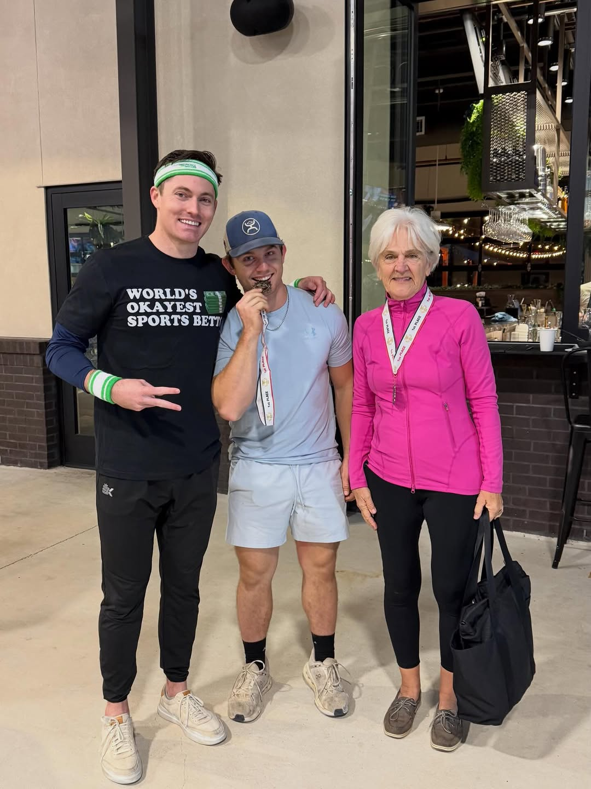
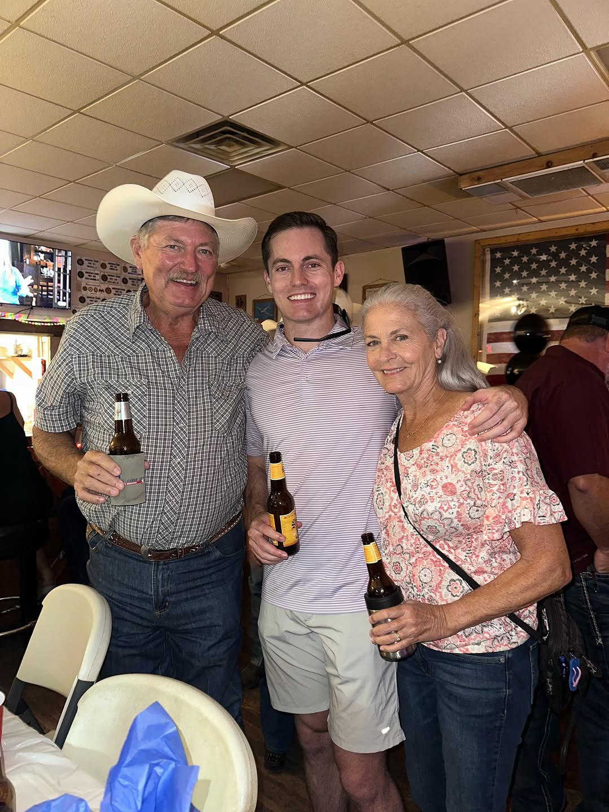

Personal log · Austin
Luke Jaroszewski
Austin. Trails. Miles. People.
The miles, the ridgelines, and the people I do it with.
Log
the long version
Austin. Trails. Miles. People. That is the whole brief.
Weekdays I’m in Austin. The rest of the time I’m on a trail, logging miles, or out with the crew. Movement keeps me grounded, and this city gives me plenty of room to explore.
Seven miles and 4,900 feet in a day is a good Saturday. Sometimes that’s above the clouds. Sometimes it’s Whitefish, a first rodeo, Red River ’26, a beach sunset, or standing up as best man and officiant. Always the people.
Ground
weekdays
Weekdays: solutions engineering. The rest is this.
I also work in solutions engineering, but this page isn’t that.
Side quests
off the clock
Hiking, Whitefish, a first rodeo, a wedding, a beach, the crew.
 above the clouds.
above the clouds.
 7 miles. 4,900 ft.
7 miles. 4,900 ft.
 Whitefish.
Whitefish.
 first rodeo.
first rodeo.
 Red River ’26
Red River ’26
 beach sunset.
beach sunset.
 best man & officiant.
best man & officiant.
 Barbarossa Trough.
Barbarossa Trough.



